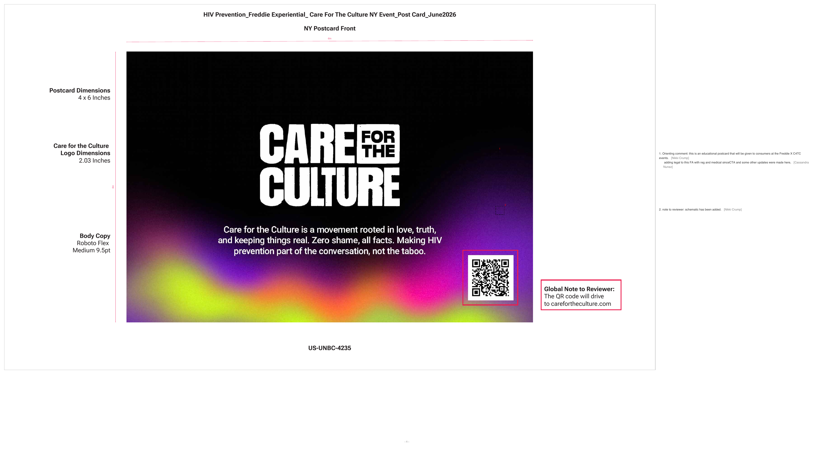

Wade, with Majority
PRC submissions without the rebuild
July 2026 · space to move
Where we left off
Your workflow
Redline
A live demo
What it takes
Investment
01 · Where we left off
The committee asked for the full terms & conditions flow. The night before, from LA.
Twenty added pages. Every page reference in the submission broke.
The rebuild took about fifteen minutes.
The deck went in on time. Zero accuracy flags.
That's the capability we're productizing.
02 · Your workflow
Your workflow, in your words. Redline lives inside this loop.
A checklist of every comment and its answer, ready to paste into Veeva.
Annotations drafted for the team.
Change a word inside a board without touching the file.
An AI that reviews the way PRC does, before you submit.
Connected to Google, where the team already works.
Tiers, with real numbers.
Redline turns source assets, project context, and prior review history into annotated PRC decks, submission-ready responses, and coordinated revision rounds, inside the tools your team already uses.
In motion this week
Drive and Slides stay where work lives. Veeva remains the system of record. Redline does the work between them.
03 · Redline
The deck, the annotations, the paperwork, assembled from your assets and your brief.
Read the way your committee reads, before it goes in.
Every comment tracked, answered, and carried into the next version.
Drop in the asset headed for review and the docs around it, then write or record the brief: what this is, what to annotate, what to watch for.
"Annotate every claim and the ISI timing. Flag anything Regulatory would."
The docs give it context. The brief says what to annotate.
Annotated according to the format the account prefers and the asset type. Your team comments right on the page, together.

"Zero shame, all facts" stays. It tested well.
Logo to 2.03 in so front matches the ATL run.
Hold release until the QR hits the live URL.
54 pages renumber. Footers update.
Apply to allEvery page editable, in Redline or exported straight to Slides.
Works with you, not just for you. Every annotation drafted for you, in your conventions, down to the decimal points. Approve, adjust, or edit anything, with the same multi-player editing suite as Google Slides.
House rule: decimals take periods, never commas. Drafted in your conventions, waiting on your approve.
Freddie demonstrated a 2.5% absolute reduction in events versus placebo at week 12, sustained through week 24 in the open-label extension.4
Do not administer to patients with known hypersensitivity. Monitor hepatic function at baseline and during treatment.
No more drawing boxes page by page. Approve, adjust, or edit, just like Slides.
Before you submit, Redline reads it the way your committee will: what may be flagged, what the annotations missed, and a summary of what it found.
Five items need attention before this goes in: two your committee will flag, two the annotations missed, one it won't call.
"Superior efficacy" phrasingMedical reviewer rejects superiority claims without head-to-head data
Likely flag›ISI hold under 4 secondsRegulatory has flagged this in prior kiosk rounds
Likely flag›Decimals written 2,5% on frames 2, 5, 9house rule: periods, never commas
Requirement check›Claim C-07 drifted from the approved formno longer matches the claims library
Possible issue›New comparative chart on frame 6no precedent in your history, so a person should look at this one
Needs human interpretation›Trained on your history. Sharper every round. Honest about what it can't call.
Open any flag and Redline shows the reasoning, the precedent it traces to, and the fix, ready to apply.
Superior efficacy, day one
Freddie congress kiosk · headlineSuperior efficacy, day oneSubstantiated efficacy, day one
Freddie congress kiosk · headlineEvery flag arrives with its reasoning and its fix.
Every sticky note drafted, matched to its slide, ready for wherever you submit. Copy, paste, done.
R2-001 · "Superior efficacy" softened
EditorialSlide 3R2-002 · Decimals corrected to 2.5%
EditorialSlides 2, 5, 9R2-004 · Citation C-07 relinked
EditorialSlide 7R2-005 · Footer case number corrected
AccountAll pagesR2-003 · ISI hold extended to 4 seconds · in progress with engineering
EngineeringSlide 12R2-006 · Hero star element removed · queued for creative
Creative · PSDSlide 1Nothing reconstructed from memory. What's still open says so.
Comments come back and Redline turns them into a worklist: de-duped, mapped to the exact page, tagged by who owns it.
128 stickies in, 96 real to-dos out. Nothing retyped.
Open any comment: the original sticky, the page it lands on, and a drafted response, ready to paste.
"Superior efficacy is not substantiated. Soften."Softened to "substantiated efficacy" per the approved comparative form.
Paste to Frame 3 · headline Copy"2,5% is the EU format. Fix."Corrected to 2.5% on every instance, per your style guide.
Paste to Frames 2, 5, 9 Copy"ISI must hold 4 seconds on scroll."Scroll hold set to 4 seconds. Engineering confirmed on device.
Paste to Frame 12 · ISI Copy"Star element reads as a claim. Remove."Removed from the hero. PSD change routed to creative.
Paste to Frame 1 · hero art Copy"Claim C-07 cites the old form."Relinked to the approved comparative form.
Paste to Frame 7 · claim Copy"Kiosk CTA overlaps the fair balance."CTA moved 12px up. Fair balance clear at every size.
Paste to Frame 9 · CTA CopyOne click per response, or the whole set pastes into Veeva in one pass.
Once a change is approved, Redline applies it everywhere it lands: the deck, the asset, every banner size, from one note.
Superior efficacy, day one
Freddie congress kiosk · hero frameSubstantiated efficacy, day one
Freddie congress kiosk · hero frameSubstantiated efficacy, day one
Substantiated efficacy, day one
Day one
Bigger creative calls route to your designers as a precise to-do, then get verified on return.
Every fix compared against the request it came from. What's addressed is confirmed; what isn't gets caught here, not by the client.
misses caught before the client saw them
93 of 96 requested changes confirmed addressedeach one diffed against its request
ConfirmedView logFrame 12 ISI hold still 2 secondsrouted to engineering
Partially addressedReassign160×600 footer shows the old case numberregenerating from the note
Not foundFix in-toolClaim C-07 phrasing differs from the approved formsent back to editorial
Needs reviewNotify editorialMisses caught, not discovered.
Before the first submission, Redline ingests your approved history and turns it into working knowledge your team validates.
Only approved folders are indexed. Nothing becomes a reusable rule without a human validating it.
Every round teaches it your committee's patterns: what gets flagged, which phrasing clears, what never survives review.
Reviewer A
Regulatory
Flags spacing patterns on interactive formats. Pre-empt with the 4-second ISI hold.
Reviewer B
Medical
Rejects superiority phrasing without head-to-head data cited inline.
Reviewer C
Legal
Wants every citation tagged and linked before review starts.
Reviewer D
Commercial
Lightest touch, mostly copy tone. Rarely blocks a round.
Annotate everything on interactive products, not just claims
Decimals with periods, never commas
PRC case number on every page footer
Never use "cure", "safe", or unqualified "proven"
New this round · hold the ISI 4 seconds on scroll
Isolated per client, never shared. Submission two starts smarter than submission one.
Same process, every format. One note lands in the deck, the banners, the print, the board.
Platform UX templates stay current automatically, so screenshots never get flagged as the wrong version.
Substantiated efficacy, day one
Substantiated efficacy, day one
Day one
Substantiated efficacy, day one
Camera pushes in on the kiosk screen
VO: "Substantiated efficacy."
US-UNBC-001 · PRC-2214
Warm, patient-first, photography-led.
Bold, data-forward, chart-led.
Round 1 came back marked up by hand. Redline regenerated the page: corrected, re-referenced, ready for round 2.
Freddie demonstrated a 2,5% absolute reduction in events versus placebo at week 12, sustained through week 24 in the open-label extension.
Do not administer to patients with known hypersensitivity. Monitor hepatic function at baseline and during treatment. The most common adverse reactions were headache, nausea, and fatigue.
Freddie demonstrated a 2.5% absolute reduction in events versus placebo at week 12, sustained through week 24 in the open-label extension.4
Do not administer to patients with known hypersensitivity. Monitor hepatic function at baseline and during treatment. The most common adverse reactions were headache, nausea, and fatigue.
Creative judgment stays with your creatives.
A named person approves every upload. Nothing reaches Veeva on its own.
The submitter finally gets the context that used to live in other people's heads.
Runs in your Google tenant.
Each client's knowledge base is isolated. Nothing crosses accounts.
Your data never trains a shared or public model.
Every suggestion links back to its source.
A full audit trail: who approved what, when, from which precedent.
Your admins can inspect and delete anything, any time.
A human approves every action that leaves the system.
Bring your MSA. We built for that conversation.
Gets the checklist and Veeva-ready responses without rebuilding either.
Sees status, review windows, and ownership in one place.
Annotations drafted for them. InDesign untouched.
Roughly twenty pages added to a submission deck the night before it was due.
Every page number and every "return to page" reference in the deck breaks at once.
Rebuilt the structure, updated the references, regenerated the deck in about 15 minutes, run remotely.
The deck went in on time and got reviewed instead of reconstructed. Zero accuracy flags.
Demonstrated during the Feed engagement. One live project, not yet an aggregate benchmark. [TODO: Cal confirms facts + engagement name]
Your team, on the manual process, from our first call.
04 · A live demo
You already sent us real submissions. We'll take one from your email and run it in front of you.
Import an asset and build the deck structure
Draft the functional annotations
Surface one likely flag with its source
Turn one comment into an assigned change and a Veeva-ready response
05 · What it takes
Fixed, one-time build.
Dedicated for the build.
On the product and your asset families.
Weeks 1 and 2 are a calibration sprint on your real assets: kiosk, social, storyboard, banner, print. Included, not extra.
06 · Investment
Every submission, every round.
Everything in the Engine, plus a bounded creative layer.
Model retraining and PRC-rule updates. The product is yours either way.
Additional formats, direct Veeva actions, or SharePoint workflows.